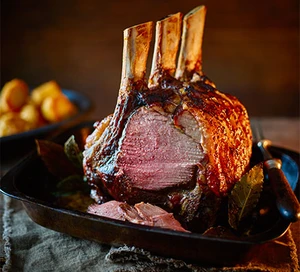

Roast wing of beef

How to prepare a roast wing of beef
A one of a kind roast beef
Ingredients
- Wing rib of beef-2kg
- Beef dripping
- Yorkshire puddings
Gravy
- Carrots
- Onion
- Red wine
- Plain flour
- Beef stock- 200ml
Steps
- Pre heat the oven to 195 degrees celcius.
- Place the dripping in a heavy roasting tray and heat on the stove top.
- Place the beef in the tray and brown well on all sides.
- Place in the oven on 195 degrees celcius for 15 minutes then turn down to 75 degrees celcius for 2 hours.
- Remove and allow to rest before carving.
For the gravy
- Remove the beef.Place the tray with the fat, sediment and the juice back on the stove.
- Add the mirepoix and brown well.
- Add the red wine and reduce by two thirds.
- Mix the flour and a little stock together to form a viscous butter like mix.
- Add the stock to the roasting tray and bring to the boil.
- Pour in the flour mix and whisk into the liquid in the tray.
- Bring to the boil, simmer and correct the seasoning.
- Pass through a sieve and retain for service.
To complete
Slice the beef and warm the yorkshire puddings, serve with the gravy, horseradish and mustard.
Home